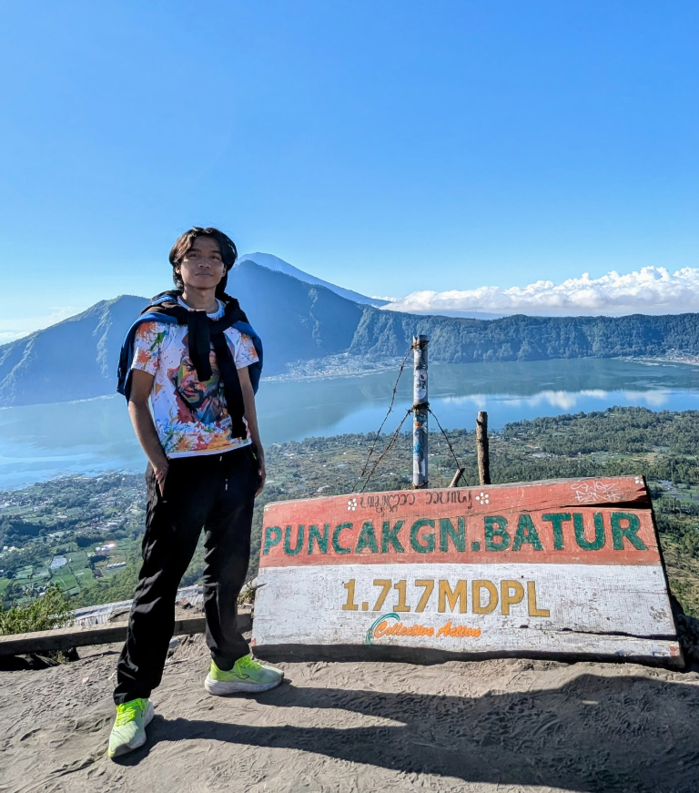
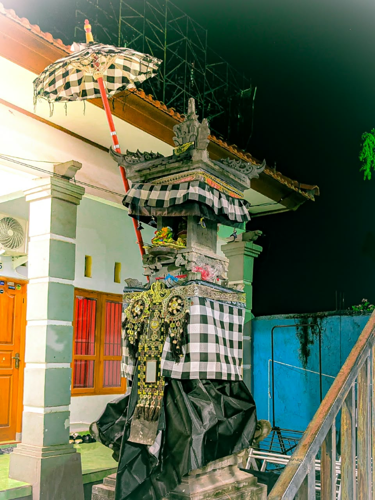
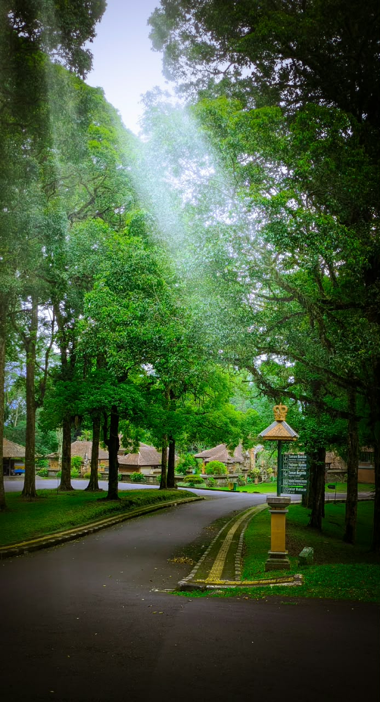
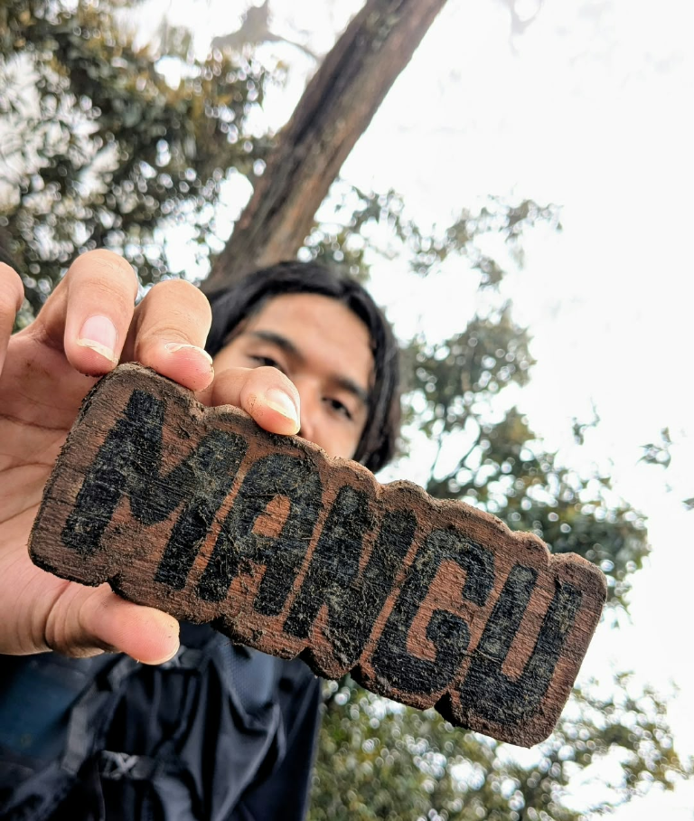

Versi singkat
Membuat hal yang berguna di web.
Saat ini saya mempelajari teknologi web dan AI melalui proyek pribadi dan kerja bersama tim.
Dev / Manado, IndonesiaMahasiswa Ilmu Komputer
Saya mahasiswa Ilmu Komputer yang tertarik pada pengembangan web dan kecerdasan buatan. Saya belajar dengan membuat proyek dan bereksperimen dengan teknologi baru.
01 / Tentang saya
Web development dan AI
Versi singkat
Saat ini saya mempelajari teknologi web dan AI melalui proyek pribadi dan kerja bersama tim.
Dev / Manado, IndonesiaKontribusi satu tahun terakhir
Pendidikan
Program Studi Ilmu Komputer
Matematika dan Ilmu Pengetahuan Alam
Sekolah Menengah Pertama
Sekolah Dasar
02 / Lisensi & Sertifikasi
Kredensial & pencapaian
Google Developer Groups
Penghargaan kompetisi pemrograman kreatif dan pemanfaatan inovasi kecerdasan buatan.
Integer — HMJ TI Undiksha
Pelatihan intensif pengembangan perangkat lunak, kolaborasi tim, dan dasar web modern.
03 / Keahlian
12 teknologi
04 / Galeri
Perjalanan & dokumentasi




05 / Proyek
Website pribadi
Blog pribadi untuk menyimpan catatan dan cerita.
06 / Kontak
Untuk pertanyaan, kolaborasi, atau kesempatan kerja, silakan kirim pesan melalui email atau media sosial.
Hubungi saya